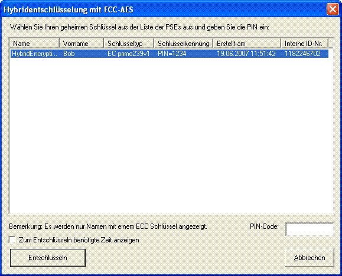

Dieser Dialog bietet die Möglichkeit, das verschlüsselte Dokument mit dem ECC-AES-Hybridverfahren auch wieder zu entschlüsseln.
Dieser Entschlüsselungs-Dialog kann über den Menüpunkt Ver-/Entschlüsseln \ Hybrid \ ECC-AES-Entschlüsselung gestartet werden.
Nach Auswahl des Schlüsselpaares und Eingabe des PIN-Codes kann mit einem Klick auf den Button Entschlüsseln das Dokument entschlüsselt werden.
Optional kann man sich auch hier die zum Entschlüsseln benötigte Zeit durch die Markierung der Checkbox anzeigen lassen.
Das entschlüsselte ECC-AES-Dokument wird nun wieder im Klartext in CrypTool angezeigt: